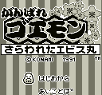

Ganbare Goemon - Gameboy Games
Ganbare Goemon Sarawareta Ebisumaru

Company:
Konami
Date Released:
22 Dec 1991
Price (in yen):
3689
Genre:
Action RPG
Controls
A button
: Jump
B button
: Attack
Start
: Pause
Select
: [not used]
Anime Video Game Resource Center © 1998 by
Luis A. Cruz